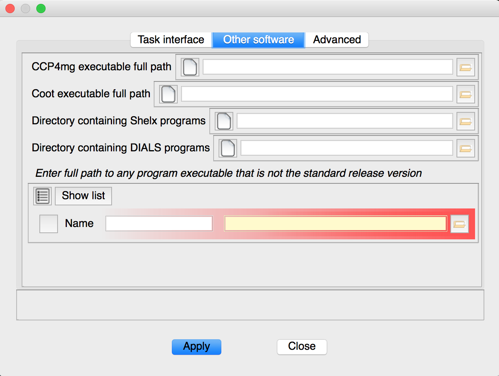

"ccp4i2" -> "Preferences" (OS X) or "Edit" -> "Preferences" (Windows/Linux) brings up a window which can be used to change the behaviour of ccp4i2. The "Other software" allows the user to specify the location of additional programs used by ccp4i2, e.g. a custom Coot installation.
